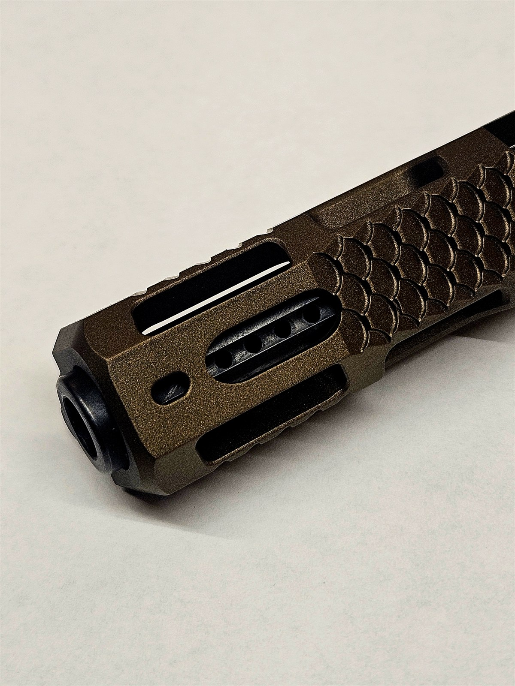
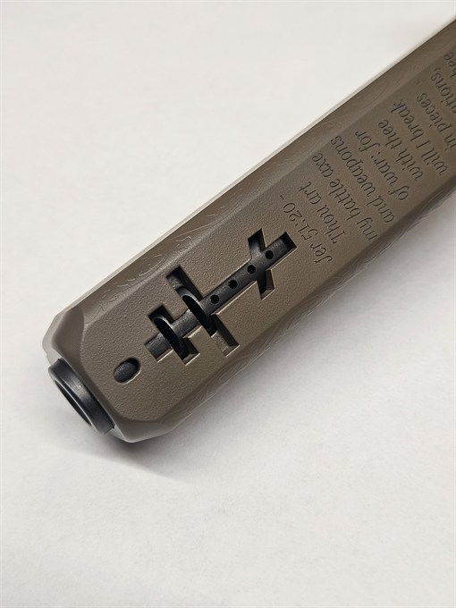
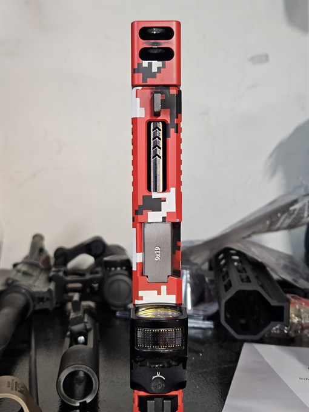
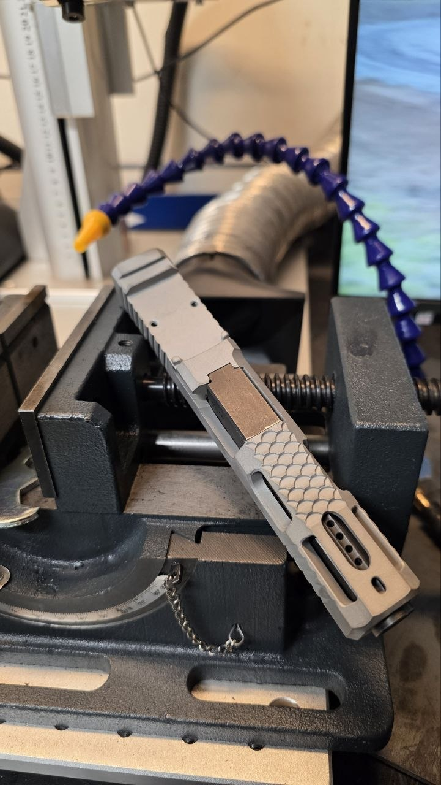

Please reach out for quoting or questions.

Service
Here at NAS-T we are proud to offer custom Cerakote services to meet your needs. Cerakote is a great way to customize your firearm, as well as protect it from the elements and wear.



Service
At NAS-T, one of our growing-in-popularity services is barrel porting and slide cutting. Barrel porting allows the firearm to vent expended gasses in a downward motion to help mitigate recoil. Part of the process is windowing your slide to allow these vented gasses a place to exit.
We can do custom designs and styles to fit your desired design or aesthetic. Feel free to reach out for a quote!


